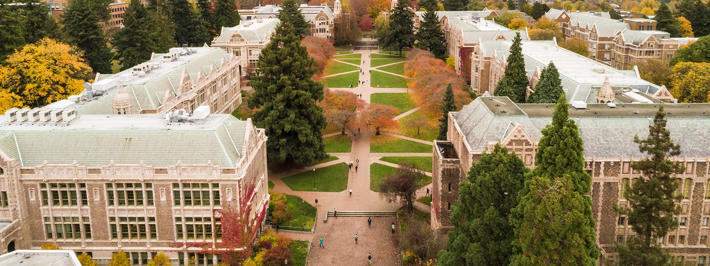

Welcome!
Hi, welcome to my Honors portfolio! My name is Wintana Eyob and I'm a senior at the University of Washington (UW) studying Informatics with Interdisciplinary Honors. This isn't your typical portfolio with a resume and projects, although if you're interested in that, you can find my professional experiences clearly laid out in my other portfolio.
My Honors portfolio is a site I created as part of my final requirements for graduating with Interdisciplinary Honors at the UW. This site is a culmination of my undergraduate experience at UW. You'll get to see how I've evolved academically, professionally, and personally in my four years here.
Learning statement
When I was 16, I put “learn how to code” on my bucket list.
I heard it was the future of our world (whatever that meant), so I thought it would be a useful skill to pick up. But, I never made an action plan for how I'd learn how to code. In fact, I forgot about that bucket list for a few years.
It wasn't until a few years later that I'd seriously consider learning how to code.
Like most students, I came into the UW uncertain about my career and what I wanted to study. But I knew two things: I was passionate about social justice and I wanted to make a lot of money.
I shared my plan with my advisor, and she introduced me to Informatics.
She explained that in this major I could fuel my passion for justice while learning technical skills. And that's exactly what happened.
I learned new technical skills: programming, design thinking, data analysis, and so much more, all while having a huge ethics focus, and applying these concepts in long-term group projects that focus on using technology for the betterment of society.
Using technology for social good is just one of the ways I've found a creative way to combine my passions into one. As you'll see throughout my portfolio, my interests vary a bunch, but I love finding ways to combine them into one.
I hope you have fun browsing around and seeing some of my favorite moments at the UW! Enjoy :)